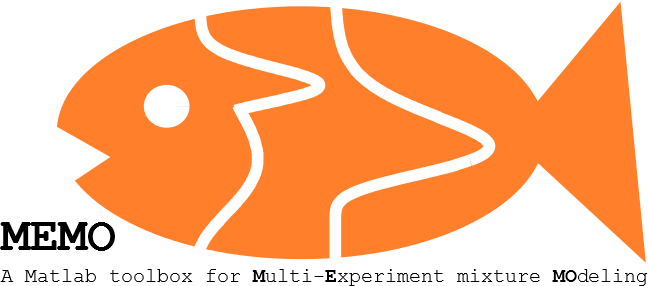

Features
MEMO is an easy to use software toolbox for the statistical analysis of uncensored and censored single cell data. It can deal with a variety of data types. The subpopulation structure and statistical properties of heterogeneous cell populations are assessed by the application of maximum likelihood inference and hypothesis testing to mixture models. MEMOs key features are
- support of uncensored, interval and right censored data,
- symbolic definition and compilation of the mixture models,
- support of normal, log-normal, gamma and Johnson-SU distributions,
- integration and simultaneous analysis of multiple experimental conditions,
- provision of gradient information for multi-start local optimization,
- automated backward model selection,
- integration of identifiability and uncertainty analysis (profile likelihoods and Markov chain Monte Carlo methods) using PESTO.
For the parameter estimation we exploit the Parameter EStimation Toolbox (PESTO) developed in the Institute of Computational Biology of the Helmholtz Zentrum München.
Requirements
MEMO is a software package for MATLAB. To exploit its functionality the Optimization Toolbox, the Symbolic Math Toolbox and the Statistics and Machine Learning Toolbox are required. For MCMC sampling the MATLAB toolbox DRAM is required.
Reference
If you use this toolbox in a publication, please cite the following manuscript:
Geissen, E.-M., Hasenauer, J., Heinrich, S., Hauf, S., Teis, F. J., & Radde, N. E; MEMO: multi-experiment mixture model analysis of censored data. Bioinformatics 32(16): 2464-2472 (2016)
This toolbox has been applied in:
Heinrich et al. Determinants for robustness in spindle assembly checkpoint signalling. Nat Cell Biol, 15(11), 1328–1339.
Support or Contact
Eva-Maria Geissen eva-maria.geissen@ist.uni-stuttgart.de
Jan Hasenauer jan.hasenauer@helmholtz-muenchen.de